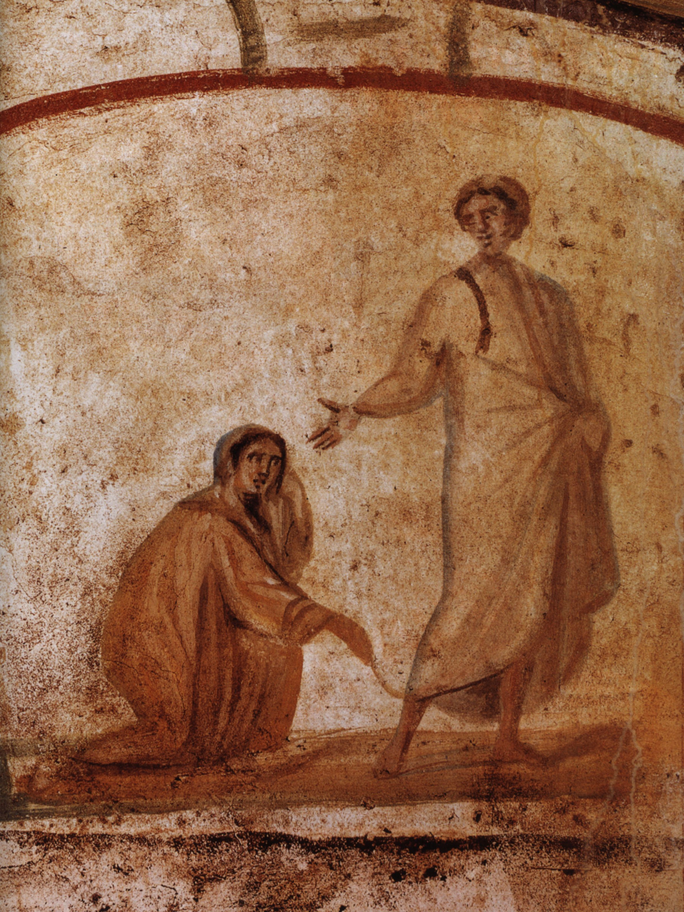

Ο Χριστιανισμός μέσα από τις Γραφές του
Διάρκεια = 4 εβδομάδες | Κόστος = 130$

Ο Χριστιανισμός είναι μια παγκόσμια θρησκεία. Από το μέτριο ξεκίνημά του πριν από 2.000 χρόνια, έχει αυξηθεί για να καλύπτει σχεδόν το ένα τρίτο του ανθρώπινου πληθυσμού.
Διαφορετικοί σε γλώσσες, πολιτισμούς, ιστορίες και θρησκείες, οι Χριστιανοί μοιράζονται ωστόσο μια κοινή συλλογή ιερών γραφών που ονομάζεται Βίβλος.Αυτό το μάθημα θρησκευτικών σας εισάγει στη Βίβλο και τη γραφή της και θέτει τις ερωτήσεις:
-
Πώς έχουν εφαρμόσει οι Χριστιανοί τις ιστορίες και τις διδασκαλίες τους;
-
Ποια είναι τα περιεχόμενα, οι γλώσσες και οι μορφές των Βίβλων σε διάφορους χρόνους και τόπους;
-
Πώς αντικατοπτρίζει η χριστιανική ιστορία τις αμφισβητούμενες και ποικίλες χρήσεις της γραφής – στον αρχαίο ρωμαϊκό κόσμο όπου ξεκίνησε ο Χριστιανισμός, στη
διάδοσή του μέσω της ευρωπαϊκής και αμερικανικής αποικιοκρατίας, στις διαφορετικές μορφές που παίρνει σε διάφορες τοποθεσίες σε όλο τον κόσμο;
Τι θα μάθεις στο συγκεκριμένο μάθημα.
-
Τι υπάρχει στη Βίβλο, το βιβλίο που περιέχει τις ιερές γραφές των Χριστιανών.
-
Μια επισκόπηση των περιεχομένων με έμφαση σε ποικίλες ερμηνείες γνωστών αποσπασμάτων.
-
Διερεύνηση επιλεγμένων θεμάτων, όπως ο τρόπος με τον οποίο οι Χριστιανοί προσεγγίζουν τη διαφορετικότητα, οι στάσεις απέναντι στις μη χριστιανικές παραδόσεις,
τα υπαρξιακά ζητήματα του πόνου και της βίας, η συνάντηση με τη σύγχρονη επιστήμη, οι ρόλοι των γυναικών, ο λειτουργικός χρόνος και το προσκύνημα.
Link για τα μαθήματα!